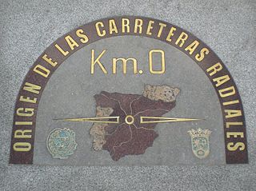
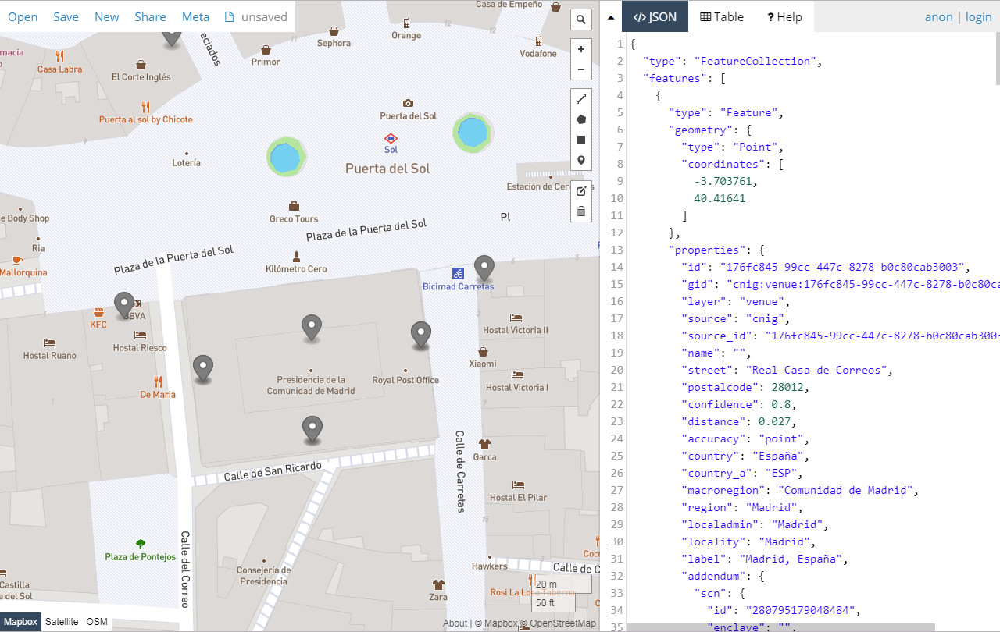
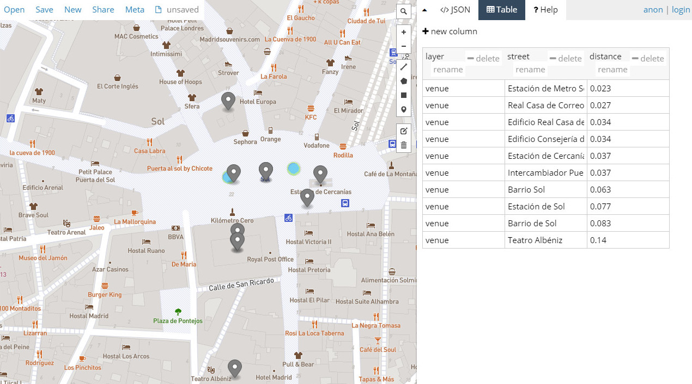

Geolocalización por coordenadas geográficas
La geolocalización por coordenadas geográficas, es el método utilizado para encontrar las direcciones o lugares que se encuentran más próximos a un punto de coordenadas dadas.
Este procedimiento permite localizar cerca de una ubicación los siguientes tipos de elementos:
- Direcciones.
- Topónimos.
- Puntos de interés (POIs).
Construcción de la consulta.
El formato de interrogación a la API se construye a partir de la url de referencia de este método (/v1/reverse), seguido del signo ? y de la secuencia de parámetros que configuran la pregunta, separados por el signo &.
En nuestro caso, la url (endpoint) a la que dirigir las peticiones de geolocalización por coordenadas geográficas es:
https://geolocalizador.idee.es/v1/reverse.
Para realizar una codificación inversa es necesario disponer siempre de las coordenadas del punto cerca del cual se quiere localizar la información, especificando su latitud y longitud en la llamada mediante los parámetros point.lat y point.lon respectivamente.
Ejemplo: Si se desea localizar el punto, dirección, topónimo o POI, más próximo al punto conocido como Km 0 de España, ubicado en la Puerta del Sol de Madrid, cuyas coordenadas latitud,longitud son: 40.416645598,-3.70381211

La sintaxis a utilizar es:
https://geolocalizador.idee.es/v1/reverse?point.lat=40.416645598&point.lon=-3.70381211.
Pulsando sobre el enlace anterior se obtiene un fichero en formato GeoJSON que contiene los resultados de la búsqueda de los puntos más próximos a la ubicación dada, en este ejemplo la placa de granito del Km 0 en Madrid.
El fichero con formato GeoJSON puede ser leído en un navegador web (1) o en un procesador de texto.
Cuadro de parámetros.
Como en otros métodos, las operaciones de consulta de geolocalización por coordenadas geográficas se pueden configurar añadiendo a la sintaxis de la pregunta distintos parámetros, que en este caso son los siguientes:
| Parámetro | Tipo | Obligatorio | Defecto | Descripción | Ejemplo |
|---|---|---|---|---|---|
boundary.circle.radius |
numérico coma flotante | no | 50 | Valor del radio (kilómetros) utilizado en la búsqueda en una región circular (2) | 10 |
boundary.country |
cadena de caracteres | no | ninguno | NO IMPLEMENTADO |
|
boundary.gid |
cadena de caracteres | no | ninguno | NO IMPLEMENTADO |
|
point.lat |
numérico coma flotante | no | ninguno | Valor de la latitud del punto de referencia utilizado en la geolocalización por coordenadas geográficas (2) | 42.268 |
point.lon |
numérico coma flotante | no | ninguno | Valor de la longitud del punto de referencia utilizado en la geolocalización por coordenadas geográficas (2) | -4.405 |
layers |
cadena de caracteres | no | todas las capas | Nombres de las capas de datos a las que se dirije la consulta, separados por comas | venue, street |
size |
integer | no | 10 | Número deseado de resultados | 5 |
sources |
cadena de caracteres | no | todas las fuentes | Listado de fuentes de datos separados por comas, codificados según lista controlada Proveedores de datos | cnig,calrj |
Configuración de la consulta.
Los parámetros relacionados en el cuadro anterior permiten configurar distintos aspectos de la consulta.
Fijar el número de resultados.
Por defecto la API devuelve hasta 10 resultados. Si se desea un número distinto de resultados, este se puede configurar en la llamada utilizando el parámetro size.
| Parámetro | Tipo | Obligatorio | Defecto | Descripción | Ejemplo |
|---|---|---|---|---|---|
size |
integer | no | 10 | Número deseado de resultados | 5 |
Si en el ejemplo anterior se deseara recibir solamente un único resultado, la sintaxis de la consulta debería ser:
https://geolocalizador.idee.es/v1/reverse?point.lat=40.416645598&point.lon=-3.70381211&size=1.
El valor por defecto del parámetro size es 10, pudiéndose configurar la respuestas hasta un máximo de 40 resultados. Si se sobrepasa este valor, la respuesta devolverá 40 resultados junto a un mensaje de advertencia.
Filtrado por origen de los datos.
El almacén de datos de referencia en este geocodificador permite combinar datos de muchas fuentes, de hecho, uno de los objetivos principales del proyecto es definir un modelo de datos neutro en formato CSV, con objeto de poder cargar datos procedentes de distintos productores.
En la fase de pruebas se han cargado direcciones de las siguientes fuentes de datos (3).
La geolocalización por coordenadas geográficas devuelve por defecto resultados de cualquiera de las fuentes de datos disponibles, pero utilizando el parámetro sources, es posible constreñir la búsqueda a los datos de un proveedor en particular a bien un conjunto de ellos.
| Parámetro | Tipo | Obligatorio | Defecto | Descripción | Ejemplo |
|---|---|---|---|---|---|
sources |
cadena de caracteres | no | todas las fuentes | Listado de fuentes de datos separados por comas, codificados según lista controlada Proveedores de datos | cnig,calrj |
El siguiente ejemplo dirige la consulta anterior solamente a los datos aportados por el Centro Nacional de Información Geográfica (CNIG):
https://geolocalizador.idee.es/v1/reverse?point.lat=40.416645598&point.lon=-3.70381211&sources=cnig.
En la siguiente imagen se puede ver mapeado el fichero GeoJSON con los resultados de la petición.

Filtrado por tipo de datos.
El geocoder del SCN almacena la información puntual de tres tipos de datos:direcciones; topónimos y puntos de interés (POIs), almacenándolos en tablas o capas diferentes.
El parámetro layers permite dirigir la petición de información a las siguientes capas, con el fin de obtener el resultado deseado:
| layer (capa) | descripción |
|---|---|
| venue | topónimos; puntos de interés; nombres propios de las direcciones |
| address | puntos con una dirección postal |
| street | calles; vías; carreteras |
El uso del parámetro layers es el siguiente:
| Parámetro | Tipo | Obligatorio | Defecto | Descripción | Ejemplo |
|---|---|---|---|---|---|
layers |
cadena de caracteres | no | todas las capas | Nombres de las capas de datos a las que se dirije la consulta, separados por comas | venue, street |
Ejemplos:
Búsqueda de topónimos o puntos de interés cercanos al Km 0: https://geolocalizador.idee.es/v1/reverse?point.lat=40.416645598&point.lon=-3.70381211&layers=venue.
La imagen siguiente muestra el mapeado del fichero GeoJSON que contiene los resultados de la petición.

Distancia y valor de confianza.
En la geolocalización por coordenadas geográficas el fichero GeoJSON contiene para cada elemento devuelto la información de la distancia de este al punto de referencia, junto con una puntuación que valora el nivel de confianza de la respuesta.
Los valores de confianza se calculan en función de la distancia desde el resultado hasta el punto de referencia establecido, siendo probable que este valor calculado cambie con diferentes fuentes y capas de datos.
| Distancia desde el punto de referencia | Valor de confianza |
|---|---|
| < 1m | 1.0 |
| < 10m | 0.9 |
| < 100m | 0.8 |
| < 250m | 0.7 |
| < 1km | 0.6 |
| >= 1km | 0.5 |